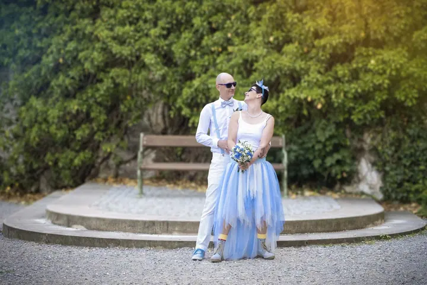
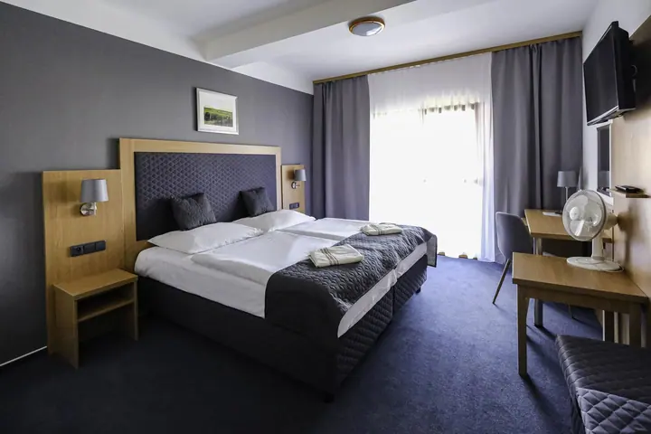

01 / 04
Svatební fotografie
Vy si svatbu užíváte a já mezitím fotím všechno, co se během dne neopakuje. Snažím se vždycky trefit ten správný moment.
Zeptat se na termín→





Zastavme čas alespoň ve fotografii
Zeptat se na termín →(01) Ahoj
Jmenuji se Hana Ilčíková a fotím svatby , portréty i rodiny s dětmi . Můj ateliér najdete v Mikulově, ale ráda za vámi přijedu kamkoli po České republice.
(02) Co fotím
01 / 04
Vy si svatbu užíváte a já mezitím fotím všechno, co se během dne neopakuje. Snažím se vždycky trefit ten správný moment.
Zeptat se na termín→02 / 04
Klasické, business i kreativní portréty a glamour. Fotím v uvolněné atmosféře, aby se vám vaše fotky líbily a dělaly vám dlouho radost.
Zeptat se na termín→03 / 04
Rodinné, párové i těhotenské focení, děti, miminka a narozeninové focení. Můžeme fotit v ateliéru, venku nebo u vás doma.
Zeptat se na termín→Dále nabízím
Ráda fotím i produkty a interiéry, například dárkové balení vín, restaurace nebo hotelové pokoje.
↗(03) Portfolio
Kliknutím fotku zvětšíte · fotografie jsou ilustrační
(04) Postup
Od první zprávy po hotovou galerii.
Krok 1 z 4
Napište mi nebo zavolejte a domluvíme se na termínu. Svatbu si zarezervujte co nejdřív, ať vám termín nikdo nevyfoukne.
Krok 2 z 4
Probereme, co si představujete a kde budeme fotit. U svatby termín závazně potvrdí rezervační poplatek 1 000 Kč, který vám pak odečtu z konečné faktury.
Krok 3 z 4
Fotíme v klidu a bez spěchu, v ateliéru, venku nebo u vás doma. Na svatbě si vy užíváte den a já se starám o fotky.
Krok 4 z 4
Upravené fotografie vám pošlu do 2–3 týdnů v elektronické podobě ve formátu JPG přes úložiště DASTAX.

K fotografiím se vždy budete rádi vracet
(05) Za objektivem
Jsem fotografka z Mikulova na Moravě. Fotografování se věnuji už přes 10 let a není to pro mě jen práce, ale hlavně koníček a radost.
Nejčastěji fotím klasické a rodinné portréty a svatby, ale ráda fotím i produkty a interiéry. Snažím se zachytit vaši jedinečnost, vystihnout vaši osobnost a ukázat emoce. Fotím v uvolněné atmosféře, protože chci, abyste se sobě na fotkách líbili.
Fotit můžeme v mém ateliéru v Mikulově, venku nebo u vás doma. Na narozeninové a vánoční focení ateliér vždycky vyzdobím, aby fotky měly tu správnou atmosféru.
Hana
Hana Ilčíková · Svatební a portrétní fotografka
Ateliér mám v Mikulově, ale fotím i venku nebo u vás doma. Za svatbou nebo focením ráda přijedu kamkoli po České republice.
Fotografie vám dodám do 2–3 týdnů v elektronické podobě ve formátu JPG přes DASTAX.
Ne, neupravené fotografie neposkytuji. Dostanete ode mě výběr hotových, upravených snímků.
Ano. Ateliér mám na doklady otevřený každé úterý od 15 do 17 hodin a přijít můžete bez objednání. V červenci a srpnu fotím doklady jen na objednání.
Vánoční focení si rezervujete přes rezervační systém na webu. Ateliér je na něj vánočně vyzdobený.
(07) Kontakt
Napište pár vět o tom, co si představujete, a termín, který se vám hodí.